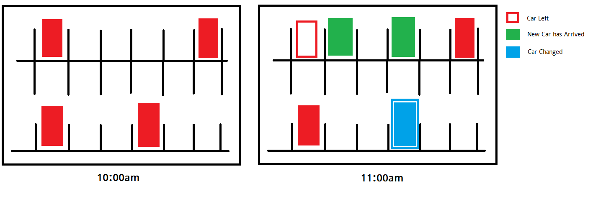

Projects
Machine Learning Related Projects
-
Human Identification from CCTV Camera (**CONFIDENTIAL, Title Only**)
-
Custom Object Detection (**CONFIDENTIAL, Title Only**)
-
Human Motion Analysis (**CONFIDENTIAL, Title Only**)
-
Human Keypoint Estimation (**CONFIDENTIAL, Title Only**)
-
Lung Segmentation and COVID-19 Detection from X-Ray Images.
Tools: PyTorch, OpenCV, HRNet, Unet
Dataset: COVID X-Ray Dataset -
Solar Panel Segmentation and Crack Detection Using Variational Autoencoder from Drone Images.
The task was to detect any type of problem of Solar panel from drone images. The possible problems were dust, stone, crack etc. The objective was to successfully segment each panel from an array of panels and then use variational autoencoder to identify the problem.
Tools: PyTorch, OpenCV
Dataset: Custom dataset -
Parking Space Change Detection from Drone Images
Given drone images of a parking lot of every one hour, the main objective is to detect arrival, departure of new cars. The most challenging part was moving drone, different weather and lighting conditions. The image below gives a short idea of the dataset and the project.

Tools: PyTorch, LabelImg, YOLOv3, OpenCV
Dataset: Custom dataset -
Face Mask Detection using YOLO
This project is based on COVID-19 situation. The main task of this project is to identify if a person is wearing a mask or not.

Tools: PyTorch, LabelImg, YOLOv3
Dataset: Custom dataset, collected from youtube and labeled using LabelImg -
House Prices Advanced Regression Techniques
Best Leaderboard Position: 60 (Top 3%)
Best Public Score: 0.10658
Tools: Scikit-Learn, Tensorflow
-
Titanic: Machine Learning from Disaster
Best Leaderboard Position: 832 (Top 6%)
Best Public Score: 0.82296
Tools: Scikit-Learn, Keras, XGBoost
-
Digit Recognizer
Best Leaderboard Position: 122 (Top 3%)
Best Public Score: 0.97738
Tools: Scikit-Learn, Keras
-
Sakura Flower Bloom Prediction
This project demonstrates the techniques of predicting the Sakura (Cherry) flower bloom day prediction.
Task: In this challenge, we have outlined the basic mechanism by which the sakura reach their eventual bloom-date. We consider building a bloom-date prediction model for the case of sakura in Tokyo, with the data split as follows: Test years： 1966, 1971, 1985, 1994, and 2008 Training years: 1961 to 2017 (Excluding the test years) You should fit the model to the data from the training years, then use the model to predict the bloom-date for each of the test years.
Tools: Scikit-Learn, Tensorflow
-
Bengali Handwritten Character Recognition
This project demonstrates the techniques of 50 bengali character classification from their handwritten images.
Task: Given the images of different handwritten alphabets such as অ, আ, ক, খ, ঋ, the task is to develop a model that can classify the images and achieve a good accuracy.
Tools: Scikit-Learn, Tensorflow, Keras
-
Emotion Detection from Twitter
In this project, using three different models I’ve tried to predict the emotion for a given short text (tweets). Models achieved an accuracy up to 88% for short textual emotion detection of seven emotion classes (Anger, Disgust, Fear, Guilt, Joy, Sadness, Shame).
Tools: NLTK, Scikit-Learn, Keras
-
Natural Image Classification
A multiclass image classification problem. The dataset contains 6,899 images from 8 distinct classes compiled from various sources. The classes include airplane, car, cat, dog, flower, fruit, motorbike and person.
Best Accuracy Score: 92.86231
Tools: Scikit-Learn, Keras
-
Lunar Lander (Reinforcement Learning)
This project is a demonstration of reinforcement learning algorithm. In this project a rocket (agent) tries to land in it's certain landing zone properly. For this project, I have used OpenAI GYM packages to make the rendering and environmental stuff easy. For decision making and learning process Policy Gradient procedure has been used.

Tools: OpenAI GYM, PyBox2D, Tensorflow, Scikit-Learn
-
Twitter Sentiment Analysis
This project was done to understand the basics of Machine Learning and Natural language processing on my 3rd year. This was the first project I did using machine learning. The purpose of the project was: 1. Understanding the basics of Natural Language processing. 2. Getting familiar with Natural Language Processing Toolkit. 3. Basics of Text Processing, Feature selection and classification.
Tools: NLTK, Scikit-Learn
Other Projects
-
YouTube Video Downloader (Single Video/ Playlist/ Channel) Windows Desktop Application.
In this project I have created a YouTube video downloader using the NuGet Package of YouTube. The package had the capability of downloading single video. But I made some modifications to download a playlist, a whole channel and a user’s all videos. This project was done to solve my own problem of downloading tutorials from YouTube.
The application can be downloaded from: Sourceforge .

Tools: C#, Docker, ASP.NET
-
Online Judge (Standalone Code Compiler) for AUST
In this project I’ve taken part in developing the website where student of AUST can participate in competitive programming, write resourceful blogs, take part in forum discussion. This website mainly focuses on the development of the students competitive programming skills. In this project my part was to develop a system that can take a source code, input files and generate output after successful compilation and execution which is later matched with the expected output and return a verdict accordingly. In this project, I have developed a code compiling system using the compilers available (TDM-GCC) which compiles and executes the code inside a docker instance. A demo code executor can be found at - Here! This demo website is also used as a backup compiler for contests.
Tools: C#, Docker, ASP.NET
-
Line following Robot using Android Camera Image processing and Arduino
A line following robot where raw data from camera is taken as input and then analyzed. After analysis a message is sent to the Arduino using Bluetooth module. A 240X240 region from camera is taken as input which id divided into 5 columns of 5X48 size. Then the color value of each block is calculated. According to the color value, a command is sent to the Arduino such as (Turn Left, Turn Right, Go Forward).
Tools: Android Studio, Arduino with Bluetooth Module, Android Device
-
A Used Book Buy Sell Website using ASP.NET MVC 5
The project was part of Software development course of third year. This project was developed using the Model View Controller architecture of asp.net.
Tools: C#, ASP.NET, HTML, CSS, Bootstrap 4, Javascript, Jquery
-
Bijay Sharani Jam
This project is a game developed for fun. All the asstets used in this game have been designed in Blender 3D. The game can be played from here.
Tools: C#, Unity3D, Visual Studio, Blender 3D